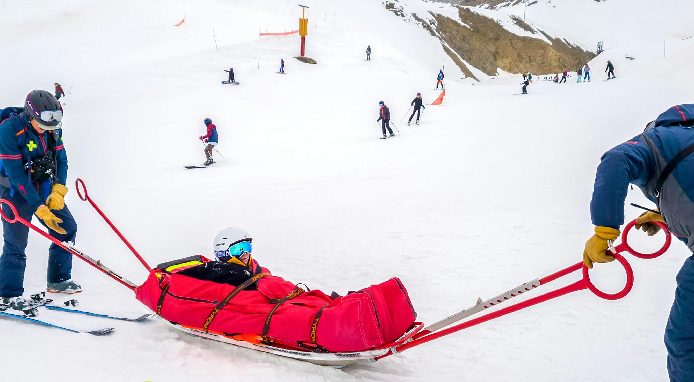

Stay Safe: Avoid Avalanches & Hypothermia
Every decision you make on the mountain matters. Know the risks. Be prepared.
Avalanche Risk is Real and Often Avoidable
Most avalanches are triggered by the victim or their group. Always check the avalanche bulletin before heading out, avoid steep, open slopes after recent snowfall, and stick to marked terrain when possible.
Bring the Right Safety Gear
If you’re heading into avalanche-prone areas, carry a beacon, probe, and shovel — and know how to use them. In cold conditions, a compact emergency bivy or foil blanket can prevent deadly exposure.
Hypothermia Can Set In Quickly
Even in mild weather, exposure to wind, wet clothing, and cold temperatures can lead to hypothermia. Wear moisture-wicking base layers, waterproof outerwear, and always pack dry backup clothing.
Recognize the Early Signs
Shivering, slowed movement, confusion, and slurred speech are early signs of hypothermia. Act fast — get the person dry, warm, and sheltered before symptoms worsen.

Avalanche Safety
Avalanches are one of the most dangerous risks in mountainous terrain, especially after fresh snowfall or rapid temperature changes. At Kalmont Mountain, we urge all visitors to be informed, cautious, and properly equipped before heading into backcountry or off-trail zones.
Avalanches can be triggered by weather conditions, terrain, or even a single step. They often occur on slopes between 30° and 45° and can happen with little to no warning. Before any trip, always check the avalanche bulletin for current danger levels and avoid traveling alone in risky areas.
Travel with a group that is trained in avalanche safety, and make sure everyone carries a beacon, shovel, and probe — and knows how to use them. Avoid steep, open terrain after heavy snowfall, and watch for red flags such as recent slides, cracking snow, or “whumphing” sounds underfoot.

Avalanche Risk FAQs
Get quick answers to the most common questions about avalanche risk, preparedness, and what to do in case of an emergency on the mountain.
How can I tell if avalanche conditions are dangerous?
Check the avalanche bulletin before your trip for current danger levels. Warning signs include recent avalanches, heavy snowfall in the last 24 hours, cracking snow, or a hollow “whumphing” sound underfoot. Avoid slopes between 30°–45° during high-risk periods.
What gear should I carry in avalanche terrain?
Always bring a beacon, probe, and shovel — and make sure everyone in your group knows how to use them. These tools are essential for locating and rescuing someone buried in snow.
Can I prevent triggering an avalanche?
Yes. Stick to low-angle terrain, avoid traveling under cornices or across steep open slopes, and travel one at a time in exposed areas. Proper planning and risk assessment are key to preventing accidents.
Hypothermia Safety
Hypothermia is a serious and potentially life-threatening condition that occurs when the body loses heat faster than it can produce it. It can happen even in above-freezing temperatures, especially when clothing is wet or wind is strong. On Kalmont Mountain, changing weather and high altitudes can increase the risk — fast.
Early signs include intense shivering, numbness, confusion, and slurred speech. If not treated, hypothermia can progress to loss of coordination, slowed heart rate, and unconsciousness. It’s essential to act quickly by warming the person, replacing wet clothing, and getting them to shelter.
To prevent hypothermia, dress in layers — start with a moisture-wicking base, add an insulating layer, and finish with a waterproof outer shell. Avoid cotton, as it retains moisture. Always pack extra dry clothing, food, and emergency gear, even on short outings. Preparedness and early response can make all the difference. Stay alert to the signs, know how to respond, and plan ahead to keep yourself and others safe in cold mountain conditions.
Hypothermia FAQs
Cold weather can be more dangerous than it seems. These frequently asked questions will help you stay warm, alert, and protected on the mountain.
What are the early warning signs of hypothermia?
The earliest signs include intense shivering, pale or cold skin, clumsiness, fatigue, and confusion. As the condition progresses, shivering may stop, speech may become slurred, and coordination decreases. If someone shows any of these signs, get them dry, warm, and sheltered immediately.
How can I prevent hypothermia while hiking or skiing?
Dress in layers: a moisture-wicking base layer, an insulating mid-layer, and a windproof, waterproof outer shell. Avoid cotton. Bring extra dry clothing, high-energy snacks, and an emergency thermal blanket or bivvy sack in your pack. Staying fueled and hydrated also helps your body generate heat.
Can hypothermia happen in above-freezing temperatures?
Yes — especially if you’re wet from snow or sweat, and exposed to wind. Wind chill and moisture rapidly increase heat loss. Hypothermia can develop in temperatures as high as 10°C (50°F) under the right conditions, so always prepare for the worst.